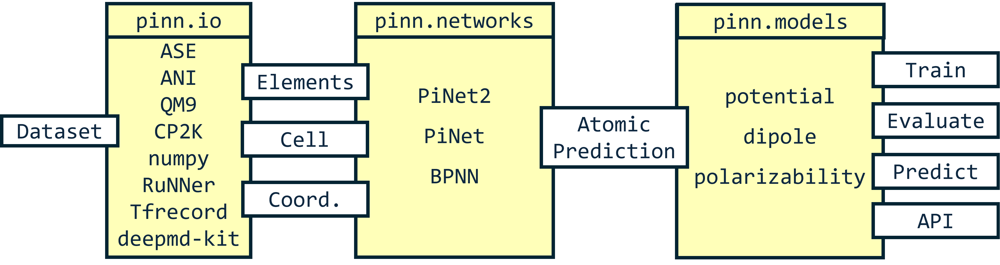

Introduction
PiNN stands for pair-wise interaction neural network, a Python library built on top of TensorFlow for performing atomistic ML tasks. Besides training ML interatomic potentials, PiNN can also predict physical and chemical properties of molecules and materials (e.g. dipole moment and polarizability). It can be used together with the adaptive learn-on-the-fly plugin PiNNAcLe1 and the heterogeneous electrode plugin PiNNwall2 for modelling electrochemical systems.
Flexibility

PiNN is built with modularized components, and we try to make it as easy as possible. You do not have to rewrite everything if you just want to design a new network structure, or apply an existing network to new datasets or new properties.
Scalability
PiNN fully adheres to TensorFlow's high-level Estimator and Dataset API. It is straightforward to train and predict on different computing platforms (CPU, multiple-GPU, cloud, etc.) without explicit programming.
Examples
The quickest way to start with PiNN is to follow our example notebooks. The notebooks provide guides to train a simple ANN potential with a public dataset, import your own data or further customize the PiNN for your need.
Cite PiNN
If you find PiNN useful, welcome to cite it as:
[1] Li J, Knijff L, Zhang Z-Y, Andersson L, Zhang C. PiNN: equivariant neural network suite for modelling electrochemical systems. ChemRxiv. 2024; doi:10.26434/chemrxiv-2024-zfvrz This content is a preprint and has not been peer-reviewed.
[2] Y. Shao, M. Hellström, P. D. Mitev, L. Knijff, and C. Zhang. PiNN: a python library for building atomic neural networks of molecules and materials. J. Chem. Inf. Model., 60:1184–1193, January 2020. doi:10.1021/acs.jcim.9b00994.
Bibtex
@UNPUBLISHED{Li2024-wa,
title = "{PiNN}: equivariant neural network suite for modelling
electrochemical systems",
author = "Li, Jichen and Knijff, Lisanne and Zhang, Zhan-Yun and Andersson,
Linn{\'e}a and Zhang, Chao",
abstract = "Electrochemical energy storage and conversion play an
increasingly important role in electrification and sustainable
development across the globe. A key challenge therein is to
understand, control, and design electrochemical energy materials
at atomistic precision. This requires inputs from molecular
modelling powered by machine learning (ML) techniques. In this
work, we have upgraded our pairwise interaction neural network
Python package PiNN via introducing equivariant features to the
PiNet2 architecture for fitting potential energy surfaces along
with PiNet2-dipole for dipole and charge predictions as well as
PiNet2-chi for generating atom-condensed charge response kernels.
By benchmarking publicly accessible datasets of small molecules,
crystalline materials, and liquid electrolytes, we found that the
equivariant PiNet2 shows significant improvements over the
original PiNet architecture and provides a state-of-the-art
overall performance. Furthermore, leveraging on plug-ins such as
PiNNAcLe for an adaptive learn-on-the-fly workflow in generating
ML potentials and PiNNwall for modelling heterogeneous electrodes
under external bias, we expect PiNN to serve as a versatile and
high-performing ML-accelerated platform for molecular modelling
of electrochemical systems.",
journal = "ChemRxiv",
month = nov,
year = 2024,
keywords = "Machine learning;Molecular dynamics;Liquid electrolyte;Ion
transport;proton transfer;double layer;supercapacitor",
language = "en"
}
@Article{2020_ShaoHellstroemEtAl,
author = {Yunqi Shao and Matti Hellström and Pavlin D. Mitev and Lisanne Knijff and Chao Zhang},
journal = {J. Chem. Inf. Model.},
title = {{PiNN}: A Python Library for Building Atomic Neural Networks of Molecules and Materials},
year = {2020},
month = {jan},
number = {3},
pages = {1184--1193},
volume = {60},
doi = {10.1021/acs.jcim.9b00994},
publisher = {American Chemical Society ({ACS})},
}
-
1 Y. Shao, and C. Zhang, “PiNNAcLe: Adaptive learn-on-the-fly algorithm for machine-learning potential,” arXiv:2409.08886, (2024). ↩
-
1 T. Dufils, L. Knijff, Y. Shao, and C. Zhang, “PiNNwall: Heterogeneous electrode models from integrating machine learning and atomistic simulation,” J. Chem. Theory Comput. 19(15), 5199–5209 (2023). ↩